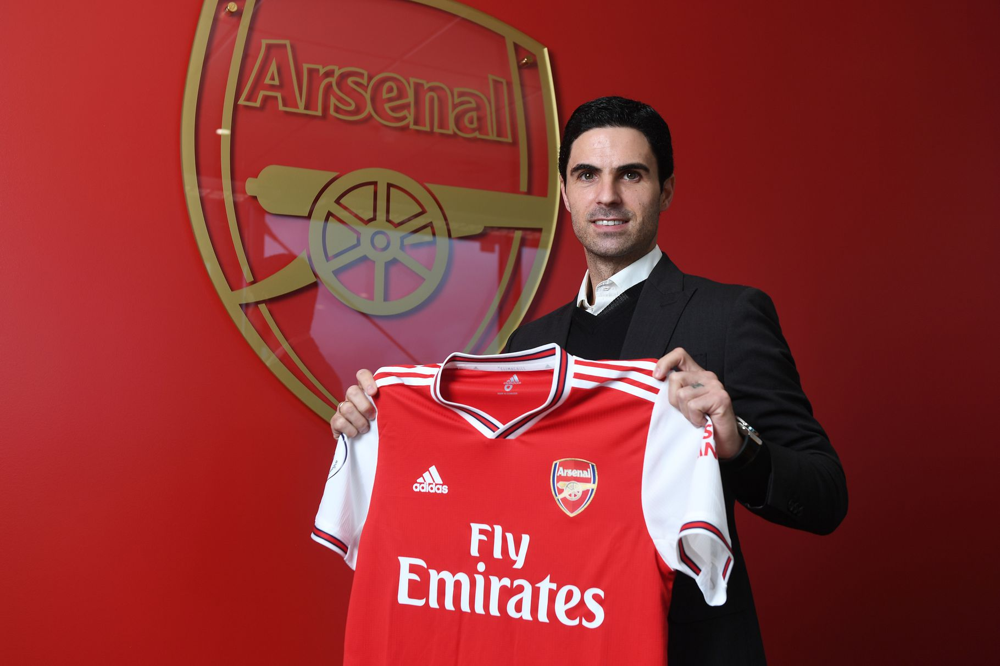
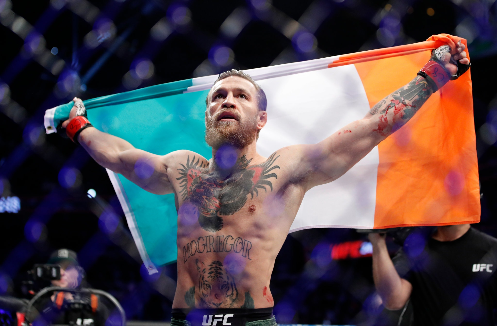
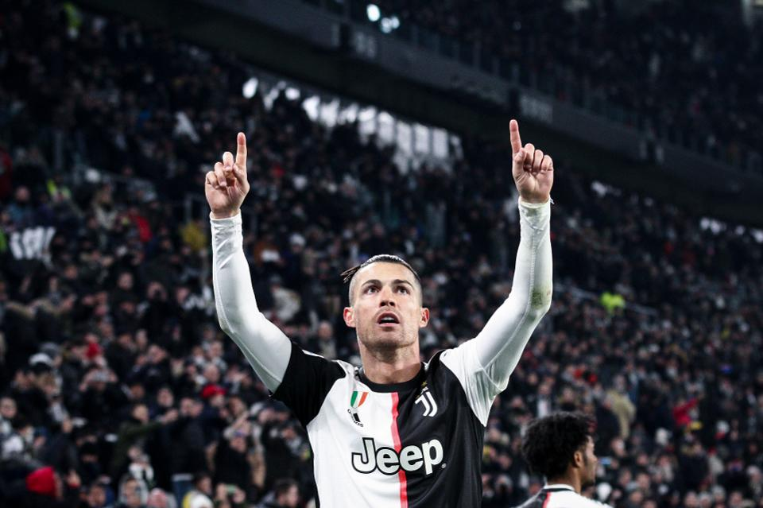
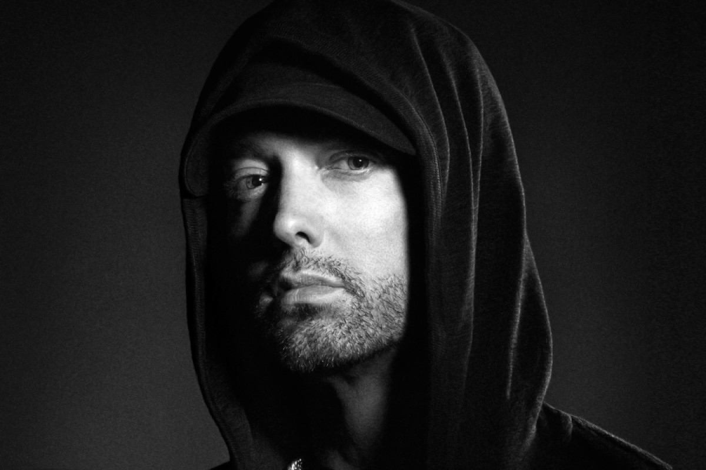
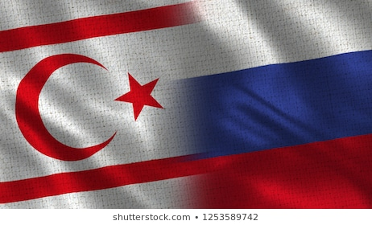

Full interview in the link on bottom:
 Click here for more informationLAS VEGAS — The first punch Conor McGregor landed bloodied Donald Cerrone’s nose. The former two-division champion, in his first bout since October 2018, landed a sharp right jab that sneaked between Cerrone’s gloves. Seconds later came the left-footed kick to the jaw that sent Cerrone, a fearless 36-year-old veteran, reeling. And then the punches rained down from McGregor as Cerrone sagged to the canvas, the bleeding speeding up. The throttling didn’t stop until the referee, Herb Dean, stepped in to save Cerrone, halting the main event of U.F.C. 246 after just 40 seconds on Saturday night. .The news relying on UFC's official website.
 More information in this link:Click the link on bottom for more information:
 Click thereEminem's album sales have slipped for three LPs in a row. By selling out with "Music To Be Murdered By," he's aiming for a new low.
 Click itThis is not the first time such reports appear in Turkish media. Why was this report so important then? First of all, the report was co-signed by two very well-respected journalists: Saygı Öztürk and Emin Özgönül. None of them ever worked in diplomatic reporting, but Öztürk is not only the Ankara representative of Sözcü but a very highly respected investigative reporter and writer of more than a dozen books, from the Kurdish problem to Islamist terrorism. Özgönül, on the other hand, has been one of the most prominent parliament correspondents and news editors. If these two prominent journalists co-reported a story, their names vouch for its accuracy. The story is based on an interview with a former military domestic intelligence officer, retired colonel Ünal Atabay, who is now with the 21st Century Turkey Institute Research Centre. According to Atabey, regarding energy resources, eastern Mediterranean, Syria and Libya were complementing each other. North Cyprus, the retired colonel claimed, was very important for Russia and its plans to make best use of the energy resources both in the Syrian fields as well as eastern Mediterranean.
 Relying on: